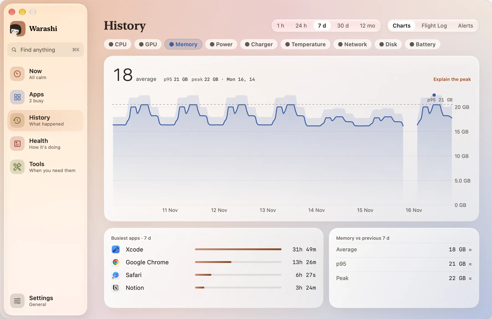

“Berapa RAM yang saya perlukan?” adalah pertanyaan paling umum sebelum membeli Mac, dan yang paling sering ditebak. Jawaban jujurnya: sebanyak yang dikatakan tekanan memori Anda, bukan yang dikatakan “Memori Terpakai”.
Mengapa “Memori Terpakai” menyesatkan
macOS menganggap memori yang tak terpakai sebagai memori yang terbuang. Ia mengisinya dengan cache file dan menjaga memori app tetap terkompresi, bukan membuangnya. Jadi Mac yang menampilkan 15 dari 16 GB “terpakai” bisa saja baik-baik saja.
Apa yang sebaiknya dilihat
- Tekanan memori: hijau, kuning, atau merah di tab Memori Activity Monitor. Ini macOS yang memberi tahu seberapa keras ia bekerja untuk menemukan memori.
- Swap terpakai: memori yang ditulis keluar ke disk. Sedikit itu wajar; puluhan gigabyte setiap hari berarti Anda kekurangan.
- Terkompresi: memori yang dipadatkan agar muat. Kompresi tinggi dengan tekanan yang naik berarti Anda mendekati batas.
Aturan praktis
| Apa yang Anda lihat dalam seminggu biasa | Artinya |
|---|---|
| Tekanan hijau, swap hampir nol | Anda sudah cukup. Memori lebih banyak tidak akan membuatnya lebih cepat. |
| Kuning pada hari sibuk, sedikit swap | Anda di batasnya. Mac berikutnya sebaiknya satu ukuran lebih besar. |
| Kuning atau merah hampir setiap hari, swap dalam gigabyte | Anda kekurangan. Satu atau dua ukuran lebih besar. |
Ukur, jangan menebak
Kuncinya, Anda perlu seminggu atau sebulan data seperti ini, pada hari tersibuk Anda, bukan sekilas pada sore yang tenang. Penasihat Upgrade Warashi mencatat tekanan memori dan swap setiap hari dan, setelah 30 hari, merekomendasikan ukuran memori yang benar-benar dijual Apple, lengkap dengan buktinya.
